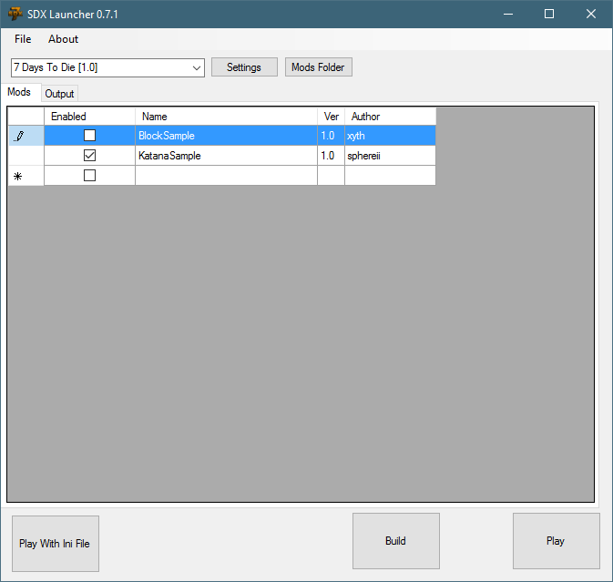
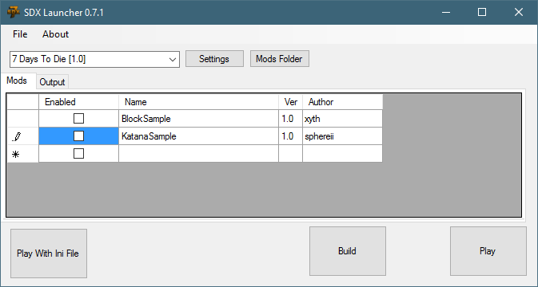
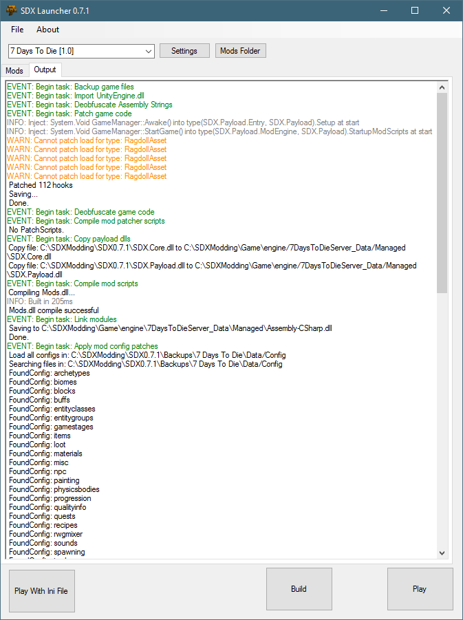
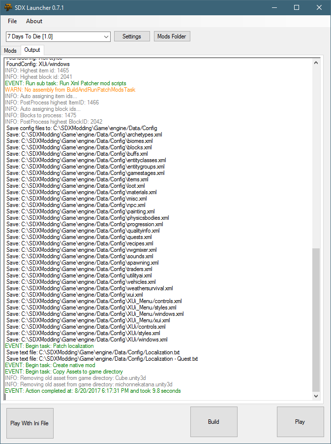

Once you have completed all the steps in the Getting Started section, it's time to trigger your first SDX compile!
Start the SDX Launcher

For the first compile, we want to disable all the available mods, to make sure everything is set up correctly.
For each Mod listed in the "Mods" tab, click on the checkmark to disable it.

Click on the "Build" Button.
The SDX Launcher will print a lot of information in the "Output" window:


Created with the Personal Edition of HelpNDoc: Easily create Qt Help files